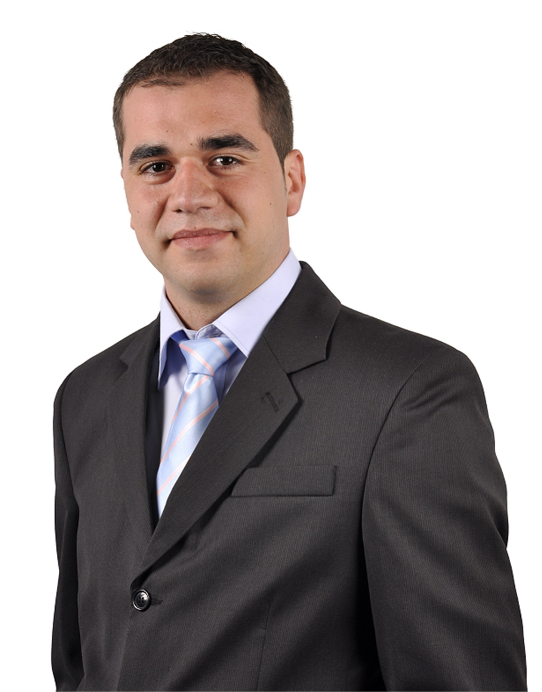

01 / Navigation
Inertial navigation & sensor fusion
Strap-down INS/MAGNETO/GPS fusion on MEMS sensors for high-precision global positioning of airborne equipment.
Electrical engineering · Instrumentation · Research
Associate Professor, PhD
Intelligent electronic systems, multisensor fusion and integrated systems for aerospace, security and critical-infrastructure applications — from MEMS inertial navigation to biomedical signal processing and interoperable health data. Faculty of Electrical Engineering, National University of Science and Technology POLITEHNICA Bucharest.

Catalogue counts cover the supplied records, including books, teaching materials, articles, thesis and patent publications.
Research interests
Instrumentation, embedded platforms and intelligent processing across aerospace, biomedical and critical-infrastructure applications.
01 / Navigation
Strap-down INS/MAGNETO/GPS fusion on MEMS sensors for high-precision global positioning of airborne equipment.
02 / Biosignals
EEG and physiological-signal processing, biosensors, machine-learning analysis and real-time biomonitoring platforms.
03 / Integrated systems
Embedded platforms, data acquisition, HL7 FHIR / IoMT interoperability, and electronic systems for critical infrastructures.
Research & collaboration
2022 –
2019 –
AOSR
Selected publications
Teaching & academic practice
Teaching since 2014 at the Faculty of Electrical Engineering — Department of Measurements, Electrical Apparatus and Static Converters. Areas reflected in authored course materials and lab guides:
Optional — send me your exact course titles, codes and year of study and I'll replace these with the official list.
About
Appointments
Education & distinctions
Contact
For research collaborations, project partnerships, doctoral co-supervision and academic correspondence.